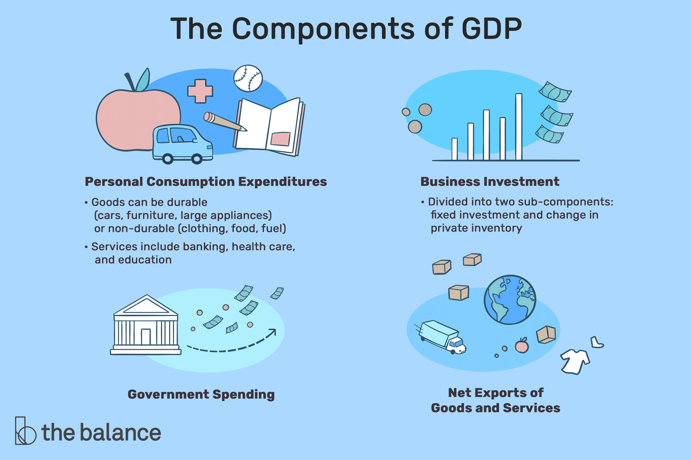

Chapter 0 - Why do we need robust data?
Contents
Chapter 0 - Why do we need robust data?#
Chapter prerequisites: Python imports#
Before running any code blocks in the following chapter, please ensure you have the necessary Python packages installed via the following code block:
%pip install pandas
%pip install matplotlib
What’s the deal with data?#
Before we start exploring how to wrangle real-life, messy data, it’s key to understand why we would want to do so. Motivating the need for robust data can help us make decisions on how to generate, process, and interpret data.
Nowadays, we often hear stories of analysis gone awry. Misapplication of cutting-edge technologies is all too common (e.g., machine learning’s reproducibility crisis), but proper analytic techniques implemented in the context of flawed data can also lead to faulty conclusions throughout a research pipeline.
Data can be flawed in many ways. A particularly salient example of data flaws are biased datasets. Some of the most common biases you’ll find in data include:
Selection bias
Ex: a test population not being representative of the whole by excluding a key minority group.
Historical bias
Ex: NLP word embedding models replicating gender-biased analogies like ‘man::doctor, woman::nurse’ due to historical disparities in opportunity.
Survivorship bias
Ex: evaluating performance of hedge funds from 1990 to 2010 - only those hedge which still exist in 2010 will be present, which already implies a certain degree of monetary sucess.
Availability bias
Ex: anytime we use a convenient data source instead of the best one.
Outlier bias
Ex: employing summary statistics which mask or are overly-sensitive to outliers to make conclusions and drive decisions.
An example of how not to deal with data biases…
For more on data bias:
Data bias is just one of many ways a dataset can lack robustness. But, before we learn how to create robust datasets, we need to define what robust data is.
Defining robust data#
While the need for quality data may be apparent, what attributes such data would possess is not immediately obvious.
What would an “ideal” dataset look like to you? How would you collect it?
When we look to describe the robustness of a dataset, it can be useful to think about what that data will be used for. Data may be used to:
Run experiments
Validate hypotheses
Draw inferences
Make decisions
etc. These usages are all common and critical applications of data, and they all share a foundational element: they employ or rely on data analysis.
Then, when we think about data robustness, it can be useful to think about it as being “robust to analysis” or not. When we define data robustness this way, are there additional ideal dataset qualities you can think of?
A working definition#
Ultimately, the exact definition of robust data are going to be dependent on your field of research and/or your particular application. However, some key considerations in any defintion include:
Data sourcing (which can lead to biased data, as previously dicussed)
Data continuity
Data timeliness
In this workshop, we’re going to be exploring how each one of these considerations can impact the creation and analysis of US GDP (Gross Domestic Product) data. For some quick interactive definitions of these terms, take a look at the code blocks below. Otherwise, feel free to move onto the next chapter to learn some more about GDP and typical GDP data before jumping in.
Data sourcing example:#
Data sourcing refers to the process of finding, assessing, and ultimately selecting a data resource to work with (be it a specific dataset, a wider database, or a third-party data vendor). Decisions by the curator of a data resource can impact the availability, representativeness, structure, and other critical attributes of your employed data — which ultimately can influence analysis . Let’s see an example:
""" DATA SOURCING INTERACTIVE DEFINITION """
# importing some libraries:
import os # use: file management and access
import pandas as pd # use: data intake and manipulation
import matplotlib.pyplot as plt # use: custom data visualization
""" BINDER USERS: """
# retrieving the data - this is a dataset detailing data science job salaries:
# source: https://www.kaggle.com/datasets/ruchi798/data-science-job-salaries?resource=downloadz
# uncomment: data = pd.read_csv('./sample_datasets/ds_salaries.csv', encoding='utf-8')
""" COLAB USERS: """
!mkdir data # create a '/data' directory if one doesn't already exist
!wget -P data/ https://raw.githubusercontent.com/roflauren-roflauren/GearUp-MessyData/main/fall_2022/sample_datasets/ds_salaries.csv # retrieve the dataset from remote storage on GitHub
data = pd.read_csv("data/ds_salaries.csv", encoding='utf-8')
# let's get a quick look at a few entries:
print(data.head(5))
# what different fields does this dataset possess for each entry?
print(list(data.columns))
# let's see how many entries we have in the dataset for each experience level:
expr_lvl_data = data['experience_level'].value_counts().sort_index(ascending=False)
bars = plt.bar(expr_lvl_data.index, expr_lvl_data.values)
plt.bar_label(bars)
Discussion: Based on the generated chart, if we were to compute the mean/median salary for a data science job in 2020, what kind of issues might we be overlooking? Is there anything fundamentally wrong with a mean/median calculation, or is there an issue with the dataset we chose to use? How might a different data source rectify these issues?
Data continuity example:#
Data continuity refers the completeness of the chosen data source across a given dimension of analysis. A common dimension for evaluating data continuity is time as with time series data — if we would like to conduct biweekly analysis for a given metric for a specific year, a dataset with 26 appropriately-spaced and populated entries would be continuous with respect to time.
Although time is an intuitive dimension, it is not the only one. Datasets can be continuous with respect to color, location, price, etc. — the evaluation depends on your desired criteria of analysis. Incomplete data can limit the scope and representativeness of your analysis, and methods to rectify incomplete data (e.g., impute missing values) can also impact your analysis. Let’s see an example:
""" DATA CONTINUITY INTERACTIVE DEFINITION """
# importing some libraries:
import os # use: file management and access
import pandas as pd # use: data intake and manipulation
import matplotlib.pyplot as plt # use: custom data visualization
""" BINDER USERS: """
# retrieving the data - this is a dataset detailing time series climate data in Delhi:
# source: https://www.kaggle.com/datasets/sumanthvrao/daily-climate-time-series-data
# uncomment: data = pd.read_csv('./sample_datasets/daily_delhi_climate.csv', encoding='utf-8')
""" COLAB USERS: """
# !mkdir data # create a '/data' directory if one doesn't already exist
!wget -P data/ https://raw.githubusercontent.com/roflauren-roflauren/GearUp-MessyData/main/fall_2022/sample_datasets/daily_delhi_climate.csv # retrieve the dataset from remote storage on GitHub
data = pd.read_csv("data/daily_delhi_climate.csv", encoding='utf-8')
# let's check out the data structure:
print(data.head(5))
# .info() provides a concise summary of a dataframe:
print(data.info())
# .describe() provides insight into the dispersion & shape of a dataframe's distribution:
print(data.describe())
# let's take a look at the mean temperature in april:
# subset just the date and temperature columns:
data = data[['date', 'meantemp']]
# filter rows for just the dates occurring in april:
april_start_end_idxs = data.index[(data['date'] == "4/1/2013") | (data['date'] == "4/30/2013")].tolist()
april_only_data = data[(april_start_end_idxs[0]) : (april_start_end_idxs[1] + 1)]
# are any dates missing? let's make a scatterplot to see:
plt.plot(april_only_data['date'], april_only_data['meantemp'])
# some formatting options to make the plot readable:
plt.xticks(rotation = 45, fontsize = 6)
plt.ylim((20,35))
plt.xlabel("Date")
plt.ylabel("Temperature (°C)")
# display the plot:
plt.show()
Discussion: Based on the scatter plot, is the April temperature data continuous? If we were trying to conduct some analysis on the April temperature data, how might the (lack of) data continuity affect us? Could we impute the points of discontinuity? How? Would one imputation method be better than others? Why?
Data timeliness example:#
Data timeliness refers to the proximity of utilized data to the present moment and relevant analysis and projections. Establishing data timeliness means utlizing datasets that are near-contemporaneous with your timeframe of analysis; i.e., NLP analysis on the most prominent topics in 1970’s science textbooks should not use a text corpus of 1950’s science textbooks.
In the case of research motivating predictions and decision-making, data timeliness is especially relevant — e.g., predicting potential wildfire hotspots demands continuously-updated and near real-time data. To that end, data sourcing and data continuity assessments of available resources become particularly important.
Although data timeliness may appear to be a structural product of data sourcing and continuity, we’ll later discuss methods to guarantee data timeliness (like developing a coincident/leading indicators) to ensure your data and analytic products are up-to-date.
""" DATA CONTINUITY INTERACTIVE DEFINITION """
# importing some libraries:
import os # use: file management and access
import pandas as pd # use: data intake and manipulation
import matplotlib.pyplot as plt # use: custom data visualization
""" BINDER USERS: """
# retrieving the data - this is a dataset detailing hospital capacity in SF for COVID-19:
# source: https://catalog.data.gov/dataset/covid-19-hospital-capacity
# uncomment: data = pd.read_csv('./sample_datasets/covid19_hospital_capacity.csv', encoding='utf-8')
""" COLAB USERS: """
# !mkdir data # create a '/data' directory if one doesn't already exist
!wget -P data/ https://raw.githubusercontent.com/roflauren-roflauren/GearUp-MessyData/main/fall_2022/sample_datasets/covid19_hospital_capacity.csv # retrieve the dataset from remote storage on GitHub
data = pd.read_csv("data/covid19_hospital_capacity.csv", encoding='utf-8')
# always explore the data before processing it!
# sample entries:
print(data.head(5))
# info on the dataset columns and types:
print(data.info())
# suppose we're only concerned with 'Available,' 'Intensive Care' beds:
avail_ic_beds = data[(data['Bed Type'] == 'Intensive Care') & (data['Status'] == 'Available')]
# sort the dataset by date:
avail_ic_beds = avail_ic_beds.sort_values(by='Date', ignore_index=True)
# let's get just the latest data:
avail_ic_beds = avail_ic_beds.tail(15)
# visualize the data:
plt.plot(avail_ic_beds['Date'], avail_ic_beds['Count'])
plt.xticks(rotation = 45, fontsize = 8)
plt.xlabel("Date")
plt.ylabel("# Available Beds")
plt.show()
Discussion: Where does this dataset end? Would this data be useful for predicting the number of available beds today? If no, what might be an alternative solution for this prediction task? If we can’t find a better dataset for this exact metric, can we approximate it somehow?
Workshop essentials: GDP definitions & datasets#

One of economics’ greatest hits!
Defintion and usage#
For the rest of this workshop, we’ll be exploring topics in the context of US GDP (Gross Domestic Product) data. In case you haven’t worked with GDP data before, or you just want a quick refresher, here’s a rundown:
Definition: GDP is “the total monetary or market value of all the finished goods and services produced within a country’s borders in a specific time period.
Use: general indicator of a country’s overall productivity and/or economic health (useful for large-scale social inquiries)
Common forms:
nominal GDP - GDP as measured with contemporaneous prices of goods
real GDP - GDP as measured with a fixed year’s prices of goods
potential GDP - an estimate of a country’s GDP under ideal economic conditions (e.g., steady currency value, low inflation, full employment)
GDP per capita - GDP divided by the population of a country, productivity per person
Your “typical” GDP dataset:#
What makes GDP an ideal statistic to wrangle with when learning to deal with “real-life” data? Let’s take a look:
Qualities of GDP Data(sets):
Typically presented as timeseries data, a common data type for longitudinal studies.
Usually published with a lag - e.g., 2013 Q2 GDP data wasn’t officially released until the end of 2013 Q3.
Computed and posted by numerous agencies and entities, typically government-related.
Multiple approaches available for calculation (e.g., expenditure, production, and income approaches)
As we’ll soon find out, each of these qualities can lend itself to inherent issues in the sourcing and use of GDP data! When you’re ready, move on to Chapter 1 ⏩!